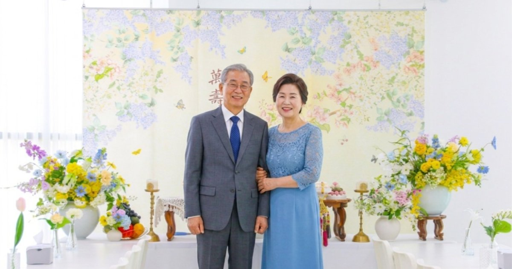

장수연 상차림
떡 3종, 제철 생과일, 헌주세트와 실크플라워를 활용해 칠순상·팔순상을 구성합니다.
가족이 주인공인 하루. 상차림부터 행사 진행까지 한 자리에서 정성껏 준비합니다.

실제 가족행사 분위기를 살려 상차림과 기념사진이 자연스럽게 이어지도록 준비합니다.
부모님의 칠순이나 팔순은 상차림만 준비하는 행사가 아닙니다. 가족이 편하게 식사하고 사진을 남기며 헌주와 축하 순서를 자연스럽게 이어갈 수 있어야 합니다. 파티후는 대전 지역을 중심으로 가족 규모와 장소에 맞춰 장수연 상차림과 행사 진행을 준비합니다.
떡 3종, 제철 생과일, 헌주세트와 실크플라워를 활용해 칠순상·팔순상을 구성합니다.
소규모 가족행사에 맞춰 축하와 헌주 순서가 부담스럽지 않게 이어지도록 진행을 돕습니다.
호텔, 연회장, 식당 등 행사 장소의 공간과 테이블 조건을 확인해 현장에 맞춰 준비합니다.
떡 3종과 제철 생과일 4~5종을 행사 분위기에 맞게 준비합니다.
헌주세트와 실크플라워를 활용해 부모님을 위한 자리를 완성합니다.
소규모 사회와 현장 진행을 지원하며 필요한 옵션은 상담을 통해 조율합니다.
행사 장소를 먼저 정한 뒤 인원, 테이블 크기, 식사 시간, 상차림 설치 가능 시간 등을 확인하는 것이 좋습니다. 특히 호텔이나 식당에서 가족행사를 진행할 경우 외부 상차림 반입 가능 여부와 설치·철수 시간을 미리 확인하면 당일 진행이 훨씬 수월합니다.
파티후는 대전 칠순잔치와 팔순잔치를 준비하는 가족에게 행사 장소와 인원에 맞는 구성을 안내합니다. 단순히 사진용 상을 설치하는 데 그치지 않고 부모님과 가족이 편하게 행사를 마칠 수 있도록 현장 흐름까지 고려합니다.
대전을 중심으로 세종·청주 등 인근 지역은 일정과 거리에 따라 상담 후 안내합니다.
가능합니다. 다만 장소별 외부업체 반입 및 설치 규정이 다르므로 예약 전 확인이 필요합니다.
네. 칠순·팔순 등 부모님 장수연에 맞춰 상차림과 행사 구성을 상담합니다.
소규모 가족행사 진행을 지원하며 세부 구성과 추가 옵션은 행사 규모에 따라 조율합니다.
칠순 준비 순서와 상차림을 확인하세요.
팔순 가족행사 준비 포인트를 확인하세요.
비용을 결정하는 요소와 체크리스트입니다.
장소 예약 전 확인할 내용을 정리했습니다.
현장에서 중요했던 준비 포인트를 소개합니다.
장소 예약 전 확인할 조건을 정리했습니다.
어르신 중심의 식당 선택 기준입니다.
가족 중심 행사 구성법입니다.
호텔 예약·설치 체크사항입니다.
견적의 포함 항목을 비교하는 법입니다.
떡·과일·헌주 구성 정보를 확인하세요.
날짜부터 사진까지 순서대로 정리했습니다.
가족행사에 맞는 간결한 헌주 순서입니다.
원판사진 촬영 타이밍과 준비법입니다.
편안한 가족행사를 만드는 기준입니다.
행사 규모와 장소에 맞춰 필요한 항목만 선택하실 수 있습니다.
전문 촬영
원본 파일 · 보정본 제공
프리미엄 생화로
더욱 풍성하고 기품있게 연출
식탁을 더욱 화사하게 연출
6인 테이블 기준
현수막 배경에 주인공 성함을 넣은
맞춤 배너 제작
행사 진행을 더욱 매끄럽고
전문적으로 도와드립니다
액자·소품 포함 포토테이블 세팅
장소에 따라 구성 상이
돌잔치 하이라이트 영상
편집 제작
※ 모든 추가 옵션 비용은 VAT 별도입니다.